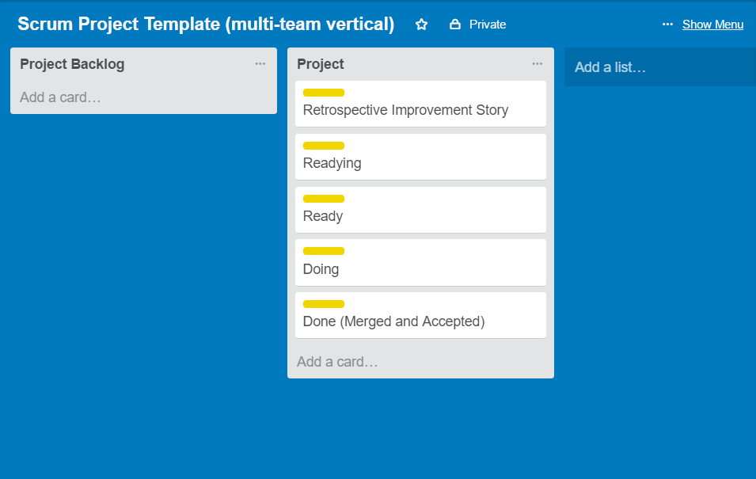
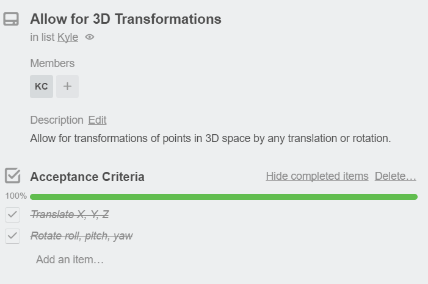
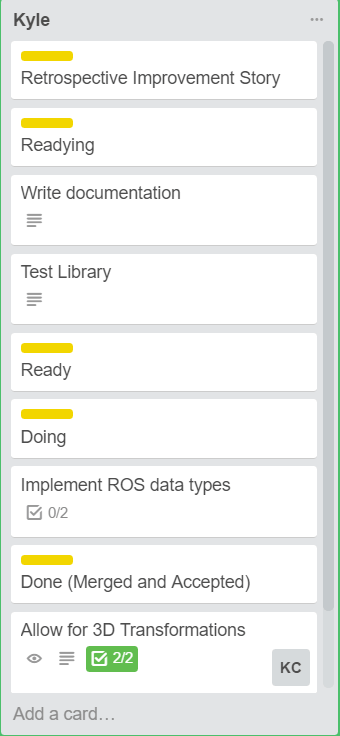

Trello is an online service that uses cards to create an interactive to-do list. So how is that relevant to FRC? Well you can use Trello to keep your team on track! At WPI, I use Trello for the NASA Space Robotics Challenge and it help keep our team organized and on track, allowing us to build very complex robot programs quickly and efficiently. The way I will teach you how to use Trello is best for your team’s programming group, but the basic principles apply to any group on your team.
The template that I will present is great for organizing your tasks as programmers and assigning people different tasks to complete the code on time. This template will work best if your team meets frequently (once a week or more), and has productive meetings following the guidelines presented later on. Below is a screenshot of the template that I use.
The project backlog is an essential part of the template as it allows your team to designate tasks that need to be completed in the upcoming weeks. Prior to a meeting, the scrum master, or person in charge of the programming group will need to create a list of tasks that are essential to moving forward with the programming of the robot. An example of a backlogged tasks could be “Calibrate camera HSV thresholds” or “Identify subsystems on the robot”. During your meeting, teams will accept the tasks presented in the project backlog and add them to the project queue. Project backlogs are useful for seeing how much is still left to do before the current iteration of the program is completed. Tasks in the project backlog should also be ordered by importance, with the task of highest importance at the top of the list and the lowest importance task at the bottom.
Tasks – also called cards in Trello terms – are the core part of a good project workflow. Tasks consist of a name, such as “Create high goal auto”. The name should be descriptive and be phrased as an action. The next is the description, which you can find by clicking on the card. The description should contain a more detailed explanation of what the task is supposed to be. The corresponding description for the high goal auto task would be: “Create a program that can be run in autonomous mode which will drive across the field and score into the high goal”. Both the name and description should be created prior to the meeting so a person will know if they are up to accepting that specific task. Optionally, a good task will include acceptance criteria. Acceptance criteria offer a checklist which can denote the task’s progress and specific implementation details. The acceptance criteria for the high goal auto would be as follows:
As the person or people assigned to the task finish the acceptance criteria, they can mark them as done to indicate that they are working towards completing their task. Here is an example of a good task:
When a person accepts a task, the task moves to the readying section of the project workflow. The readying section implies that the task was assigned. Once the task is reviewed by the person it is assigned to, it moves onto the ready section. As soon as the person begins to write code for the task or even writing down potential ideas or pseudocode, the task will move into doing. A single person should only have one task that they are currently doing. When the task is completed, a merge request should be sent (if using Git or another VCS). Only after the merge is accepted into the main branch is the task considered done. Below is an example of a project workflow for one of my projects:
(I know I should have been writing the documentation as I was coding…)
What is it? Good question! The retrospective improvement story is something that is created at every meeting (or almost every). This is the point when the people on the programming group look back on their progress and actions of the past week and suggest things that they need to improve on. They are reviewed at every meeting to see if they are met, and if they are, the task can be removed from the Trello board.
So yeah, Trello is really good for keeping your team organized and on track, and who knows, you may feel that there is actually less work to be done, or at least you will see all that you have accomplished during the build season.
I hope this helped, so best of luck trying it out! The template can found here.